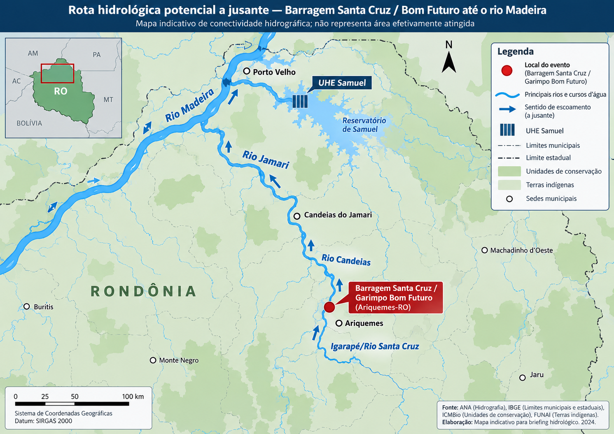
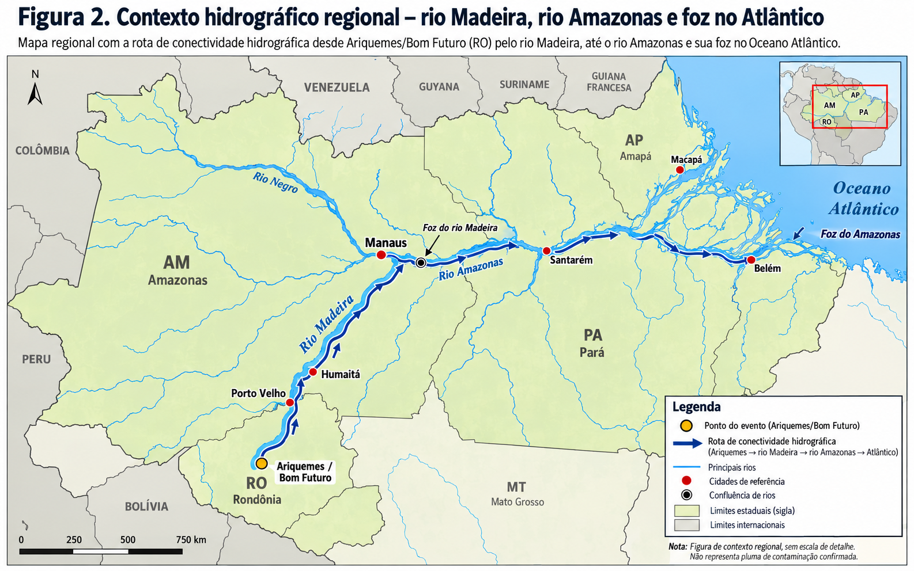

1. Síntese executiva
O conceito de “efeito dominó” deve ser tratado como cenário de falha a testar. Para demonstrá-lo tecnicamente são necessários, entre outros elementos, relações montante–jusante entre barragens, curvas cota-volume, volumes liberáveis, hidrogramas de ruptura, tempos de propagação, mapas de inundação e capacidade hidráulica das estruturas receptoras.
2. Painel visual dos indicadores publicados
Interpretação regulatória
NE1 não significa ruptura iminente. É um nível de emergência relevante, mas o patamar associado a ruptura inevitável ou em curso é o NE3.
CRI alto não é uma probabilidade numérica de ruptura. É uma classificação regulatória baseada em características técnicas, conservação, atendimento ao plano de segurança e outros fatores.
Importante: os valores desta seção foram transcritos do quadro da publicação encaminhada. A condição corrente de cada estrutura deve ser validada individualmente no SIGBM/ANM.
3. As sete barragens no quadro da publicação
| Estrutura | Empreendedor | CRI | DPA | Emergência | DCE | Operação |
|---|---|---|---|---|---|---|
| Jacaré Superior (ID 9151) | Coopersanta | ALTO | ALTO | NE1 | Não enviada | Embargada |
| Jacaré Inferior (ID 9149) | Coopersanta | ALTO | ALTO | NE1 | Não enviada | Embargada |
| Jacaré Médio (ID 9150) | Coopersanta | ALTO | ALTO | NE1 | Não enviada | Embargada |
| Igarapé Mutum (ID 9148) | Coopermetal | ALTO | MÉDIO | NE1 | Não enviada | Embargada |
| Belíssima (ID 9277) | Coopersanta | ALTO | MÉDIO | NE1 | Não enviada | Embargada |
| Rio Santa Cruz (ID 9152) | Coopermetal | MÉDIO | MÉDIO | Sem emergência | Não enviada | Desembargada |
| Massangana 01 (ID 9692) | Confirmar cadastro | MÉDIO | BAIXO | Sem emergência | Fora da PNSB | Não embargada |
4. Cadeia analítica proposta
O novo quadro não substitui a rota hidrográfica já trabalhada; acrescenta uma camada estrutural antes da propagação fluvial.
em estrutura a montante
barragem a jusante
drenagens locais
Esta sequência é um modelo conceitual de investigação, não uma simulação de ruptura. Para quantificação são necessários dados topográficos, estruturais e hidrodinâmicos de cada barragem.
5. Elementos a favor e contra a leitura de “efeito dominó”
Elementos que sustentam maior atenção
- Concentração de cinco estruturas com CRI alto.
- Cinco estruturas em NE1 e cinco embargadas.
- Seis estruturas aparecem sem DCE enviada na campanha indicada pela matéria.
- Proximidade física e possibilidade de interação hidráulica justificam testar cenário de cascata.
- Mecanismos citados — galgamento, piping, erosão de taludes e redução de borda livre — são tecnicamente plausíveis.
- A conectividade a jusante até Candeias, Jamari e Madeira já foi mapeada no estudo anterior.
Limites e contrapontos
- NE1 não é sinônimo de rompimento iminente.
- CRI alto não equivale diretamente a “alta probabilidade de romper”.
- A publicação não apresenta modelagem hidráulica de ruptura em cascata.
- DCE não enviada é relevante regulatoriamente, mas não equivale a laudo conclusivo de instabilidade física.
- Rio Santa Cruz aparece no próprio quadro com CRI médio, DPA médio e sem emergência.
- Não há quantificação, na publicação, de volume liberável, carga de sólidos/metais, toxicidade ou concentração a jusante.
6. Referências cartográficas já produzidas
Os mapas da avaliação de 29/09 são mantidos como referência para a conectividade a jusante. A atualização de 06/10 exige, adicionalmente, um novo mapa local com as sete estruturas e suas relações de montante–jusante.

Zooms operacionais derivados do mapa regional

7. O que muda para os próximos passos da SOE
Prioridade imediata
- Validar no SIGBM/ANM, para cada ID, CRI, DPA, NE, DCE/RISR, embargo e condição operacional.
- Obter coordenadas e construir mapa local das sete barragens.
- Solicitar/obter PAEBM, mapas de inundação e estudos de ruptura disponíveis.
- Verificar borda livre, extravasores, níveis e volumes dos reservatórios.
Integração hidrometeorológica
- Associar chuva observada e prevista ao nível dos reservatórios.
- Usar radar e satélite para reconstrução temporal do período sob investigação.
- Integrar vazões Santa Cruz–Candeias–Jamari e referências do Madeira.
- Separar risco estrutural, eventual liberação de rejeito e impacto efetivamente medido a jusante.
8. Publicação analisada
A matéria de 06/10/2026 amplia a reportagem anterior sobre a Barragem Rio Santa Cruz e apresenta o conjunto das sete estruturas do Garimpo Bom Futuro. Para a leitura SOE, o valor principal da publicação é indicar que a unidade de análise precisa ser ampliada do barramento isolado para o sistema de barragens + drenagem receptora.
9. Fontes e checagens
ANM — SIGBM Público: abrir cadastro
ANM — Resolução nº 95/2022: abrir norma
ANM — Perguntas frequentes sobre barragens: abrir referência
Estudo SOE de 29/09: abrir página anterior
Uso preliminar. As classificações individuais foram transcritas da publicação encaminhada e devem ser validadas em fonte oficial corrente.